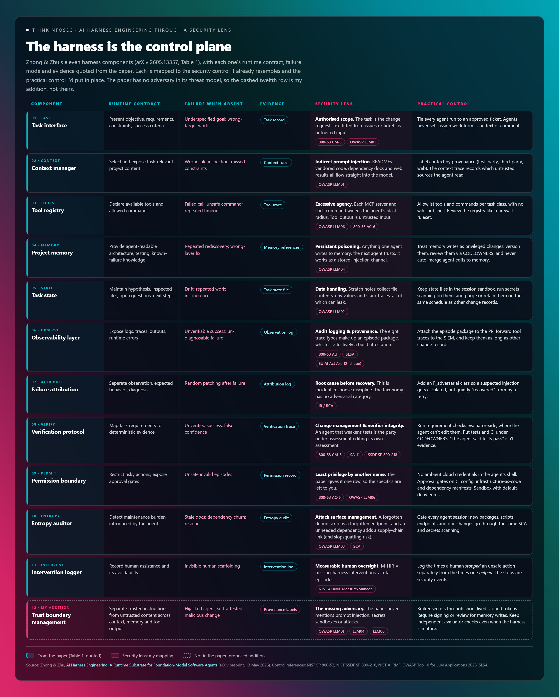

The argument
Not of the model alone
The model is not your control surface, the harness is. Permissions, observability, verification, and intervention recording are already most of a control framework.
A harness, in the old sense of the word, is the gear that lets you put a strong animal to useful work without it dragging the cart into a ditch. Worth holding onto that image for a minute, because a new preprint borrows the word for coding agents, and I reckon the security crowd should be paying more attention to it than the software-engineering crowd is.
Here’s why it matters right now. Most of us have coding agents in the building already, whether that was a deliberate rollout or a quiet “someone installed it on their laptop” situation. The conversation about those agents is still mostly about the model: which one is smarter, which one scores better on SWE-bench, which one is cheaper per token. Meanwhile the part that actually decides what the agent can see, touch, run and claim as “done” sits around the model. It’s usually a pile of config, prompts and tool definitions that nobody has reviewed with a controls mindset.
That surrounding layer is what Hailin Zhong (Hong Kong Baptist University) and Shengxin Zhu (Beijing Normal University, Zhuhai) put under the microscope in AI Harness Engineering: A Runtime Substrate for Foundation-Model Software Agents, posted to arXiv on 13 May 2026.1 It’s a preprint, not peer-reviewed yet, so take it as a framework proposal rather than settled science. Even so, it’s one of the more useful documents I’ve read this year for anyone who has to sign off on agents touching production code. Let’s get into it then.
The core claim is simple and, honestly, overdue. According to the authors:
They write it as C_system = F(C_model, C_harness, C_environment, T), which is a formal way of saying the same model can look brilliant or useless depending on the scaffolding around it. If you’ve watched the same model behave completely differently in two different agent tools, you’ve already seen this in practice.
The harness, in their framing, is the runtime substrate that mediates how an agent “observes a project, acts on it, receives feedback, and establishes that a change is complete.” They break it into eleven component responsibilities: task specification, context selection, tool access, project memory, task state, observability, failure attribution, verification, permissions, entropy auditing, and intervention recording.1
Read that list again with a security hat on. Permissions. Observability. Verification. Intervention recording. That’s most of a control framework, sitting inside a software-engineering paper that never once calls itself a security paper.
The same model can look brilliant or useless depending on the scaffolding around it.
Permissions, observability, verification, intervention recording. That’s most of a control framework, and the paper never calls itself a security paper.
The threat model is a benign world: tools that are flaky but not hostile, repos that are messy but not booby-trapped.
What the one task showed
H0’s assurance was luck, and H3’s was engineered
To test the idea, the authors built what they call the H0–H3 harness ladder. Each rung gives the agent more runtime support than the one before:
- H0: the task description and the repo files, nothing else
- H1: adds a tool registry, test commands and a usage protocol
- H2: adds project memory, task state and context selection
- H3: adds deterministic checks, bug reproduction, failure attribution and a verification protocol
I’ve redrawn the paper’s ladder below and laid a security lens over the top of it. The middle and bottom rows are the authors’ work. The magenta row above each rung, and the dashed fifth rung, are mine. Every rung that gives the agent more capability also hands an attacker a new way in, and each one has a control it should ship with.
![The harness ladder with a security lens. Five rungs left to right. Above each rung, the attack surface it opens and the control to pair: H0 poisoned repo content (LLM01), paired with checks the agent can’t edit; H1 excessive agency (LLM06), paired with an allowlist and no ambient credentials; H2 persistent memory poisoning (LLM04), paired with reviewed memory writes; H3 the agent grading itself, paired with a verifier out of its reach; and a proposed H4 trust-boundary rung answering the hostile adversary the paper never models. Below each rung, its outcome: H0 verified because the regression happened to finish, H1 and H2 unverified after a timeout, H3 verified with the timeout disclosed, H4 untested.](harness-ladder.png)
They ran each level against one controlled task: fixing a login bug where an empty password reached credential matching instead of being rejected with “Password is required.” (Yes, a login validation bug. Very on brand for us.)
Every level produced a working patch, and the same evaluator-side checks were applied to every level. The outcome labels are where it gets interesting. Straight from the paper’s results table:1
| Level | Outcome | What it produced |
|---|---|---|
| H0 | autonomous_verified_success |
Patch; evaluator-side deterministic checks pass; full regression succeeds |
| H1 | unverified_success |
Patch; tool trace; targeted test; lint; full regression records a timeout |
| H2 | unverified_success |
H1 plus context trace and updated task state |
| H3 | autonomous_verified_success |
H2 plus reproduction log, failure attribution log, deterministic requirement checks, structured verification report |
Look closely at the regression column. H1, H2 and H3 all hit the same full-regression timeout. H0 is the only run where the regression suite happened to finish. So H0’s “verified” label came from the environment cooperating on the day, not from anything the harness did. H1 and H2 had more tools and more memory than H0, hit a flaky suite, and had no structured way to prove the requirements were met anyway, so they dropped to “unverified.” H3 hit the same timeout and still came out verified, because its harness tied each requirement to deterministic evidence and disclosed the gap. Per the paper, at H3 a regression timeout “does not by itself prevent autonomous_verified_success when deterministic requirement coverage is complete and the limitation is reported.”1
One oddity worth flagging for sharp readers: by the paper’s own definitions, unverified_success means the agent “did not itself produce evidence sufficient under the protocol,” and H0’s agent produced no evidence of its own at all. It still landed as verified. That reads like an edge case in the adjudication rules, not a flaw in the thesis, but I’d want it tightened before anyone builds metrics on top of it.1
Worth the honest caveat too: this is one task, and the authors say plainly that it’s “small by design,” meant to make the ladder “concretely inspectable, not to support population-level performance comparisons.” Treat it as a demonstration of how the evidence changes shape, not a benchmark. The pattern is still worth taking into your next design review.1
A controls reading
Almost every component has a counterpart you already report against
This is where the paper becomes practical for us. Almost every harness component has an obvious counterpart in frameworks you already report against. Let’s walk through them, with my mapping layered on top of the authors’ components.
Here’s the whole picture on one page first. The teal columns are the authors’ Table 1, quoted as written. The magenta columns are my security lens and the practical control I’d put in place. The dashed twelfth row is the bit the paper doesn’t have at all (more on that shortly).

Now let’s pull the most interesting rows apart.
The permission boundary, which is least privilege by another name
The paper’s whole treatment of permissions is one row: “Restrict risky actions; expose approval gates,” with “unsafe edits; destructive commands” as the failure mode when it’s unmanaged.1 That’s NIST SP 800-53 AC-6 (least privilege) and LLM06, Excessive Agency, from the OWASP Top 10 for LLM Applications, written for a repo instead of a network.23 The paper names the permission boundary as a resource and then barely specifies it, so that part is yours to fill in. Practically, that means an allowlist of tools and commands per task class, no ambient cloud credentials in the agent’s shell, and approval gates on anything that touches CI config, infrastructure-as-code or dependency manifests.
The unsafe_invalid outcome, which is really about the integrity of the verifier
This one is gold. The authors define an unsafe episode as one where “tests are weakened, unrelated destructive edits occur, or the task is bypassed.”1 Anyone who has watched an agent make a failing test pass by deleting the assertion knows this isn’t hypothetical. In controls language it’s an integrity problem: the party being assessed has write access to the assessment. The fix is old-school. Protect test directories and CI definitions with CODEOWNERS or branch protection, so agent-authored changes to them always need a human review. The paper’s evaluator-side checks, which run outside anything the agent can modify, are the right pattern here. Make them a permanent part of your pipeline rather than an experiment-only thing.
The eight trace types and the episode package, which add up to audit logging and provenance
The paper wants every episode to produce an action trace, tool trace (command, exit code, duration, timeout, recovery), context trace, verification trace, failure-attribution log, intervention log, entropy audit and outcome record.1 For the security team, that’s the AU family in 800-53, and it’s the same shape as the record-keeping the EU AI Act asks of high-risk systems in Article 12 (most coding agents won’t fall in that category, but it’s a handy yardstick).24 It also slots straight into the provenance story you’ve been building with SLSA. My suggestion: treat the episode package as a build attestation. Attach it to the pull request, keep it with the same retention as your other change records, and you’ve got a defensible answer when an auditor asks “how do you know what the AI changed and why?”
The verification protocol, which is change management wearing a new hat
The H3 flow is “reproduce, attribute, fix, verify, report,” closing with a report that links each requirement to its evidence. That’s a change record. It lines up neatly with 800-53 CM-3 (configuration change control) and SA-11 (developer testing and evaluation), and with the testing and code review practices in NIST’s Secure Software Development Framework (SSDF, SP 800-218).25 If your change advisory process currently accepts “the agent said tests pass” as evidence, this paper hands you the vocabulary to raise the bar.
The intervention log and M-HIR, which make human oversight measurable
The authors define a missing-harness human intervention rate, M-HIR, as missing-harness interventions divided by total episodes. The idea is that when a human has to tell the agent which file to look at, that’s a gap in the harness, not a model failure.1 For governance folks this is a real gift: a metric for human oversight, which is what the Measure and Manage functions in NIST’s AI Risk Management Framework keep asking for.6 One extension I’d add: log the interventions where a human stopped the agent from doing something unsafe separately from the ones where a human helped. Those are security events, and they belong in your detection pipeline, not just your productivity dashboard.
Entropy auditing, which I’d call attack surface management
The authors list the residue agents leave behind: “redundant code, stale documentation, unnecessary dependencies, weakened tests, debug scripts, inconsistent task notes, or architecture violations,” scored 0 to 3 per category.1 They frame it as maintenance burden. I’d frame it as attack surface. A forgotten debug script is a forgotten endpoint. An unnecessary dependency is another supply-chain link (OWASP’s LLM03), and with agents that’s exactly where hallucinated package names, or slopsquatting, sneak in.3 Stale docs get read by the next agent as project memory. An entropy audit belongs in the same gate as your software composition analysis and secrets scanning.
Failure attribution, which is root cause analysis before recovery
The paper’s taxonomy (context, tool, feedback, verify, recovery, entropy, model and unknown failures) and its principle of “attribution before recovery” will feel familiar to anyone who runs incident response. Don’t retry until you know why it broke.1 It’s good discipline, and it’s missing one category that matters to us.
What the preprint does not model
The framework’s threat model is a benign world
Here’s the part I’d want every security architect to sit with. I searched the full text of the paper for “prompt injection,” “inject,” “secret,” “sandbox,” “adversar,” “malicious,” “attack,” “container” and “network access.” Zero hits on every one.1
That’s not a criticism of the authors. They set out to write about software-engineering reliability, and they did that well. But it means the framework’s threat model is a benign world: tools that are flaky but not hostile, repos that are messy but not booby-trapped. And every component that makes the agent more capable also opens a new channel an attacker can use:
- Context selection pulls in content the agent didn’t write and you didn’t vet: issue text, READMEs, vendored code, dependency docs, web results. That’s the textbook indirect prompt-injection path, LLM01 in the OWASP list.3
- Project memory is persistent and agent-readable by design, which makes it a poisoning target that survives across sessions (LLM04, Data and Model Poisoning, is the nearest fit).3 If an agent can write to memory and a later agent trusts what it reads there, you’ve built a stored-injection channel.
- Tool output is untrusted input. A test runner, linter or package manager that prints attacker-controlled strings is feeding the model.
- The verification report is self-attestation. At H3, the agent produces the evidence that it succeeded. Under a benign threat model that’s fine. Under an adversarial one, a hijacked agent can produce a beautiful verification report for a malicious change. That’s why independent, evaluator-side checks the agent can’t touch should stay in the loop even when the harness is mature.
So if you’re adopting this framework (and I think it’s worth adopting), add a twelfth responsibility. Call it trust boundary management. Label context by provenance, treat memory writes as privileged changes that need review or signing, broker secrets through short-lived scoped tokens instead of environment variables, sandbox execution with default-deny egress, and add an adversarial category to the failure taxonomy so a suspected injection gets attributed rather than quietly “recovered” from. That’s my addition, not the paper’s. I’d love to see the authors or someone else test it on the ladder.
What to do with it
The model is not your control surface
All of this to say: the model is not your control surface, the harness is. If you’ve got coding agents in your environment, here’s where I’d spend the next sprint.
- Inventory your harnesses, not just your models. For each agent tool in use, write down which of the eleven components exist, who configured them, and where the config lives. Most teams will find permissions and verification are implicit, which in practice means they don’t exist.
- Lock the verifier. Put tests, CI definitions and lint config behind CODEOWNERS or branch protection so agent-authored changes to them always need human review. Run requirement checks where the agent can’t edit them.
- Require an evidence package on agent PRs. At minimum: a tool trace, a test result tied to each requirement, and an honest note of anything that timed out or wasn’t run. Unverified is a fine outcome. Undisclosed is not.
- Track M-HIR and safety interventions as separate metrics. One tells you where the harness is weak. The other tells you where it’s dangerous.
- Run an entropy and dependency gate after every agent session. New packages, new scripts, new endpoints and doc changes get the same scrutiny you’d give a new starter’s first PR.
- Threat-model your context and memory paths. Assume anything the agent reads could carry instructions, and design the trust boundaries before an attacker does it for you.
The paper’s own conclusion reframes the question from whether a model can produce a patch to whether the model–harness–environment system “can produce a verifiably correct, attributed, and maintainable change.”1 For those of us in security, I’d add one more word to that list: defensible. Worth having a read of the full paper. It’s dense in places, but the tables alone are worth the time.
What would change this advice. If a later version of the preprint already specifies provenance, sandboxes, and an adversarial failure class, the twelfth responsibility is no longer an addition. If the ladder does not get past one task the authors call small by design, the table stays a demonstration of how the evidence changes shape, and it should not become a benchmark.1
How to read this
Method and caveats
What was read
Hailin Zhong and Shengxin Zhu, AI Harness Engineering: A Runtime Substrate for Foundation-Model Software Agents, posted to arXiv on 13 May 2026. It is a preprint, not peer-reviewed. Quotes, the eleven responsibilities, the H0–H3 ladder, the results table, the regression-timeout sentence, M-HIR, the residue list, and the failure taxonomy are theirs.1 The term search reported above — “prompt injection,” “inject,” “secret,” “sandbox,” “adversar,” “malicious,” “attack,” “container,” and “network access,” zero hits — is this reading’s search of that text, not a finding the authors published.
What is the paper, and what is this reading
On the ladder figure, the middle and bottom rows are the authors’ work. The magenta row above each rung, and the dashed fifth rung, are not. On the controls figure, the teal columns are Table 1, quoted as written. The magenta columns, and the dashed twelfth row, are the security lens. Trust boundary management, the split between a human who stopped the agent and a human who helped, and the attack-surface reading of entropy are this briefing’s, not the preprint’s. The AC-6, AU, CM-3, SA-11, SSDF, AI RMF, EU AI Act Article 12, SLSA, and OWASP LLM Top 10 mappings are not in the paper.
What this is not
Not a replication. Not a population result. The authors say the task is “small by design,” meant to make the ladder “concretely inspectable, not to support population-level performance comparisons.” Treat it as a demonstration of how the evidence changes shape, not a benchmark.1
Bibliography
Sources
Accessed 2 October 2026. The preprint first. Catalogue pages are the targets of the mapping in this briefing, not sources the authors used.
The preprint
- [1] Hailin Zhong and Shengxin Zhu, AI Harness Engineering: A Runtime Substrate for Foundation-Model Software Agents, arXiv:2605.13357v1, posted 13 May 2026. Preprint, not peer reviewed. Eleven responsibilities, the H0–H3 ladder, the results table, the regression-timeout rule, M-HIR, the residue list, and the failure taxonomy.
Catalogues used for the mapping
- [2] NIST, SP 800-53 Rev. 5, Security and Privacy Controls for Information Systems and Organizations. This briefing maps the permission boundary to AC-6, the episode package to the Audit and Accountability (AU) family, and the H3 record to CM-3 and SA-11. Those identifiers are not in the preprint.
- [3] OWASP, Top 10 for LLM Applications. LLM01 Prompt Injection, LLM03 Supply Chain, LLM04 Data and Model Poisoning, LLM06 Excessive Agency, as named in this briefing. The current project page is the 2025 edition of the list.
- [4] Regulation (EU) 2024/1689, the EU AI Act, Article 12, named here as a record-keeping yardstick for high-risk systems. Most coding agents will not fall in that category. The analogy is this briefing’s. No official text is quoted.
- [5] NIST, SP 800-218, Secure Software Development Framework (SSDF) Version 1.1. Cited for testing and code review as part of a change record. Not cited by the preprint.
- [6] NIST, Artificial Intelligence Risk Management Framework (AI RMF 1.0), NIST AI 100-1. Cited for measurable oversight under the Measure and Manage functions. Not cited by the preprint.